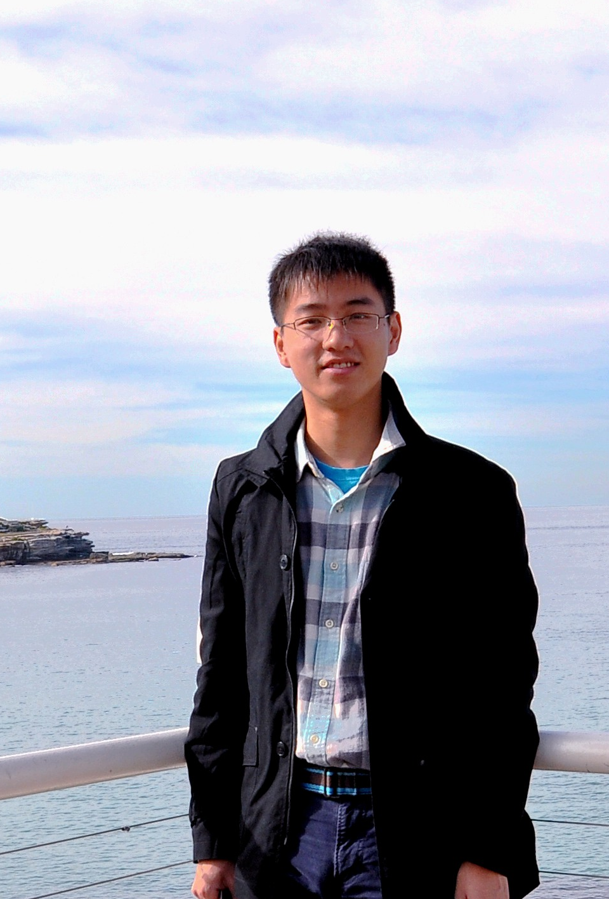

|
Yicheng Zhang
|
 |
Yicheng Zhang, Ph.D. Candidate,
School of Electrical and Electronic Engineering, Nanyang Technological University, Singapore
yzhang088@e.ntu.edu.sg
Yicheng's Google Scholar
|
Short Bio
Yicheng Zhang is a PhD candidate under the supervision of Prof Su Rong in School of Electrical and Electronic Engineering, Nanyang Technological University (NTU). I am affiliated with Rolls-Royce @NTU Corporate Lab.
I received my Master degree from Division of Automation, School of Information Science and Technology, University of Science and Technology of China (USTC) in 2014, and my Bachelor degree from School of Electrical Engineering and Automation, Hefei University of Technology (HFUT) in 2011. Since August 2014, I became a PhD candidate in Nanyang Technological University.
Research Interests
News
Upcoming
[Mar 2018] I will attend the NTU-NXP Smart Mobility Testbed Workshop at Eindhoven, the Netherlands.
[Feb 2018] I will enjoy the upcoming Chinese New Year with my family in China.
2018
2017
[Dec 2017] I present our paper “A Hierarchical Approach for Air Traffic Routing and Scheduling” at the 56th IEEE Conference on Decision and Control (CDC’17) in Melbourne this December.
[Dec 2017] I travel to Australia this December.
[Nov 2017] I travel to Kolkata, Bodh Gaya and Durgapur in India this November.
[Nov 2017] Our paper “Optimal Day-ahead Scheduling of Electricity and Natural Gas System at the Distribution Level Considering Uncertainty of Natural Gas Load” is presented by Prof Jian Chen during the 1st IEEE Conference on Energy Internet and Energy System Integration in Beijing.
[Nov 2017] I attend the Future Mobility Symposium organized by Land Transport Authority in Singapore.
[Oct 2017] I attend the 4th Air Traffic Controllers Association Singapore / Air Line Pilots’ Associations - Singapore (ATCAS / ALPA-S) Symposium in Singapore.
[Aug 2017] Our two papers, “Traffic Light Scheduling for Pedestrians and Vehicles” and “Modelling and Traffic Signal Control of a Heterogeneous Traffic Network with Signalized and Non-Signalized Intersections”, are presented at the 1st IEEE Conference on Control Technology and Applications in Hawaii.
[Aug 2017] I visit Singapore Aviation Academy (SAA) and Signapore Air Traffic Control Center (SATCC) in Changi. Some photos can be found here
[Aug 2017] We present our work during the NTU-NXP Workshop. The posters can be found here and some photos can be found here.
[Jul 2017] Our two papers, “A Hierarchical Approach for Air Traffic Routing and Scheduling” and “A Macroscopic Propagation Model for Bidirectional Pedestrian Flows on Signalized Crosswalks”, have been accepted by 56th IEEE Conference on Decision and Control (CDC’17).
[Jul 2017] Our paper “Optimal Sizing for Grid-tied Microgrids with Consideration of Joint Optimization of Planning and Operation” has been accepted by IEEE Transactions on Sustainable Energy.
[Jul 2017] I am appointed as a Teaching Assistant for FE1008 Computing in College of Engineering, NTU.
[May 2017] Our paper “Jaya, harmony search and water cycle algorithms for solving large-scale real-life urban traffic light scheduling problem” has been accepted by Swarm and Evolutionary Computation.
[May 2017] Our two papers, “Modelling and traffic signal control of a heterogeneous traffic network with signalized and non-signalized intersections” and “Traffic Light Scheduling for Pedestrians and Vehicles”, have been accepted by IEEE Conference on Control Technology and Applications.
[Apr 2017] I travel to Malacca in Malaysia on Good Friday.
[Feb 2017] Our Paper “Distributed flight routing and scheduling in air traffic flow management” has been accepted by IEEE Transactions on Intelligent Transportation Systems.
[Jan 2017] I attend the launching ceremony of Singapore's first Smart Mobility consortium by NTU-NXP Joint Programme.
[Jan 2017] I attend a winter school on intelligent transportation organized by Prof Rong Su in NTU, Singapore.
[Jan 2017] I am appointed as a Teaching Assistant for EE4504 Design Of Clean Energy Systems in School of Electrical and Electronic Engineering, NTU.
2016
2015
2014
[Dec 2014] I travel to Bali, Indonesia with Yiqing, Xun and Yuling during Christmas.
[Aug 2014] My Ph. D. programme starts. I become a Ph. D. student in School of Electrical and Electronic Engineering at Nanyang Technological University, Singapore.
[Jun 2014] I graduate from University of Science and Technology of China with Master's Degree.
|